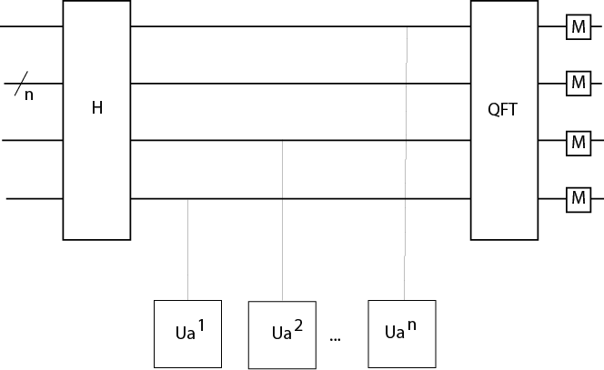
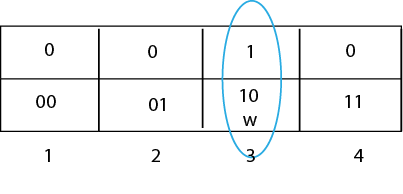
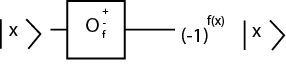
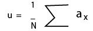
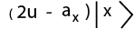
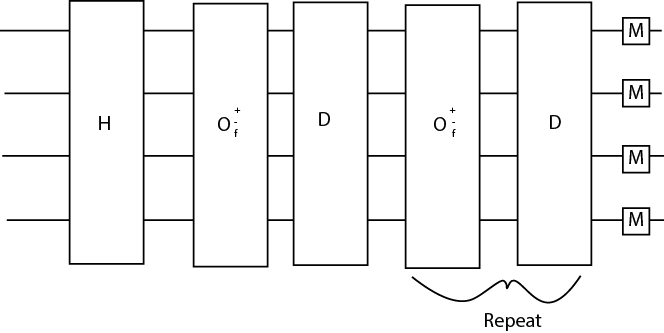

Description: If there was a golden child of quantum computing, it would be Shor’s algorithm. Shor’s algorithm is an incredibly important algorithm in quantum computing that has the capability of making a huge impact on current web security. Current computers depend heavily on RSA encryption, which gives each message two keys: the public key which is used to encrypt the messages, and the private key, which is used to decrypt the message. Here is one way how the two keys are generated:
The Encryption function is: c = memodn
The Decryption function is: m = cdmodn
Classical computers can find the private key using a tactic called the number field sieve, but the algorithm has an incredibly large time complexity: a superpolynomial in the size of the input: O (exp [c(ln n)1/3(ln ln n)2/3]. It is theorized however, that with quantum computers and Shor’s algorithm, the RSA encryption can be cracked in an incredibly shorter amount of time: O ((logn)2(loglogn)) on a quantum computer and O(logn) on a classical computer. Let’s get into the math behind Shor’s algorithm.
Shor’s algorithm consists of types of computing:
Shor’s Steps:
We can change the problem of factorization into a problem for period finding because of a few properties that Leonhard Euler discovered. Before we get to that point, let’s look at an integral part of period finding.
Let’s say we have N = pxq, where p and q are two prime numbers. We can select a random number x < N, and using modN, we can create a series of values: xmodN, x2modN, x3modN, x4modN … that continues until we find a period. For example, the powers of 2 are:
2, 4, 8, 16, 32, 64, 129, 256, 512, 1024, 2048, 4096, 8192, 16384Let’s say we have N = 15, p = 3, and q = 5. If we make a series of values using x = 2, and mod15, we get:
2, 4, 8 ,1, 2, 4, 8, 1….The values start repeating after 4 values, therefore the period r = 4. The period is relatively small, but can increase in length rapidly. For example, let’s say we had N = 35, p = 7 and q=5. If we make a series of values using x = 2, and mod35, we get:
2, 4, 8, 16, 32, 29, 23, 11, 22, 9, 18, 1, 2, 4, ….And the period comes out to be r = 12. You can imagine that as we use increasingly large numbers for N, that the period can increase as well to an unwieldy length for a classical computer. The most important reason for using the period was discovered by Euler. As long as x is not divisible by p or q, meaning x is less than either prime number and is not a multiple of either number, then the period, r evenly divides the value: (p-1)(q-1). We’ll use our earlier values as proof.
If we have p=3 q=5 x=2 and r=4: we know that 2 is not divisible by 3 or 5. So (3-1)(5-1) = 8. 8 is evenly divisible by 4.
If we have p=5 q=7 x=2 and r=12: we know that 2 is not divisible by 5 or 7. So (5-1)(7-1) = 24. 24 is evenly divisible by 12.
This characteristic is incredibly important because if we know information about the divisors of (p-1)(q-1), we can find multiple values of x and r where this work, and eventually use these divisors to find p and q!
Gates: Hadamard Gate, Measurement Gate, Quantum Fourier Transform
 QuTip Walkthrough:Description: Grover’s algorithm is a probabilistic search algorithm that was developed for searching through an unsorted database. Another explanation for what Grover can do is inverting a function. For example, if we have y=f(x), the Grover algorithm will calculate x when given y. If there are N entries in the database, Grover’s algorithm has a theoretical efficiency of O(sqrtN) while classical algorithms will have a worst time of O(N). So if we had a list of 1000 items, worst case, a classical algorithm would take 10,000 steps. Grover’s algorithm however, could do it in 100 steps! As you can see, Grover’s would provide quadratic speed up in searching. It’s important to note that because it is probabilistic, meaning its not 100% correct each time, running the algorithm multiple times can increase accuracy.
The Grover algorithm takes advantage of a procedure called the amplitude amplification. What this basically means is the amplitude of the marked item, the item we are looking for, is amplified, and the other amplitudes of the other items are repeatedly shrunk. Let’s say we had a two qubit system where the possible value are { 00, 01, 10, 11 }. We can label these respectively states 1,2,3,4. For this example, we’ll say that we’re looking for state 3, and we can label this w- our winner state. The end goal is for w to return 1, and for each other state to return 0.
Before we go into the steps, we will have to define two gates: The oracle O(+-f) gate and the Grover Diffusion Operator- represented by the D gate.
The oracle gate is:
Which basically flips the amplitude of the value we are searching for and does nothing to the values we are not searching for.
The D Gate represents the Grover Diffusion Operator, which inverts the amplitudes around the mean of all of states. To do this it first has to calculate the mean,
Then it uses the mean in the following equation:
Now that we know what the gates do, we can move on to the steps of the Grover Algorithm:
Gates: Hadamard O(+-f) oracle gate, D gate (Grover diffusion operator), measurement This is for 2 qubits: {0,1} and their various combined states. You can add more qubits, and they’d still go through each gate listed below.
Description: Deutsch’s algorithm is a probabilistic algorithm, meaning that it is not always successful, and in particular this algorithm is right half of the time. It was created in order to show how quantum computers can be used, but it doesn’t solve an important programming issue. It is however useful in illustrating how to manipulate qubits and how they work. The Deutsch algorithm tests whether a function f is constant OR balanced. This means that EITHER:
So we can have f(0) or f(1) map to 0 or 1. The algorithm tests the function f to see whether the function is one to one (balanced), meaning that each x value has exactly one y value, and each y value has exactly one x value, or if it is not one to one and is therefore constant. Remember that quantum algorithms use unitary transformations, which are reversible. So we have to receive a value that we can put back in the transformation and get the original values. This is illustrated below.
Once the transformations have been made, the answer is derived from the first qubit. If the qubit is equal to 1, the function f is balanced. If the first qubit is equal to 0, the function f is constant.
Gates: Hadamard Gate is always used. CNOT or NOT Gate is used. Measurement Gate. Quantum Oracle U
In the example function provided, we will be using the CNOT gate. This will determine the observable value of the qubit.
If the value is not valid, the script will exit.
Ensure that the script file is within your qutip environment before you run this file within your console!
Description: The Deutsch-Jozsa algorithm is a deterministic algorithm, meaning that if you put a specific input into this algorithm, you are guaranteed the same output each time. It has the same purpose as the Deutsch algorithm, however this algorithm is for functions with many bits, not just 2. The Deutsch-Jozsa algorithm tests whether a function f is constant OR balanced. This algorithm is a better example of how quantum computing algorithms can solve issues faster than classical computer, because by using this algorithm it only takes one evaluation of U, while a classical algorithm would have to evaluate the function f at least 2n-1+1 times to solve. This is a dramatic improvement. This means that EITHER:
So we can have f(0) or f(1) map to 0 or 1. The algorithm tests the function f to see whether the function is one to one (balanced), meaning that each x value has exactly one y value, and each y value has exactly one x value, or if it is not one to one and is therefore constant.
The quantum oracle U is demonstrated below:
Gates: Hadamard Gate, Measurement Gate